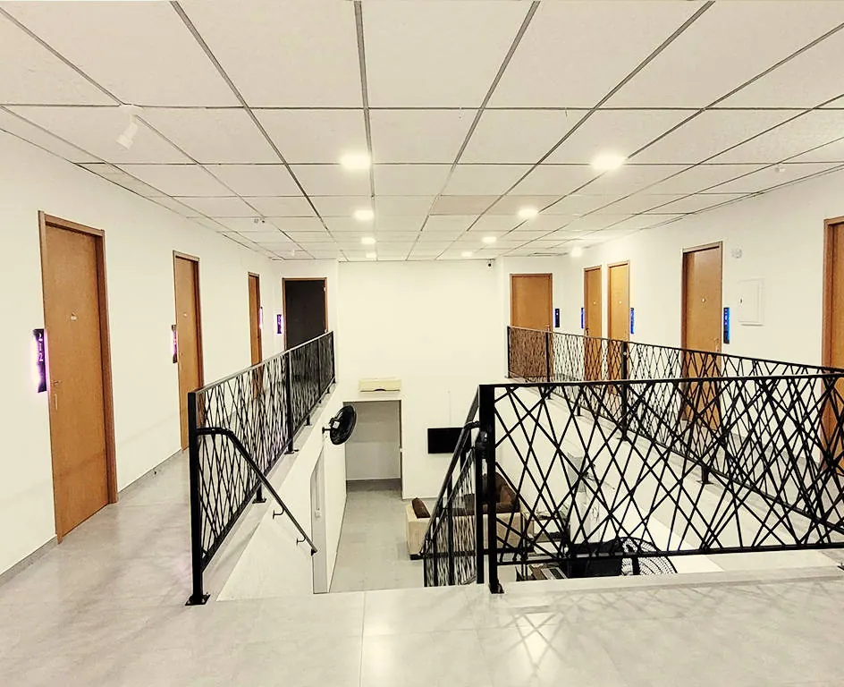

Onde fica
Av. Getúlio Vargas, 241, Bucarein, Joinville (SC), CEP 89202-204. Em frente ao Hospital São José.
O acesso lateral do prédio é pela Rua Américo Matrangola, 38.

A pé
| Hospital São José | 50 m |
|---|---|
| Padaria e Doceria São José | 100 m |
| Faculdade Guilherme Guimbala (ACE) | 190 m |
| Univille (Centro) | 250 m |
| Maternidade Darci Vargas | 500 m |
| Shopping Müller | 850 m |
| Centro da cidade | cerca de 12 min |
De ônibus ou de carro
| Ponto de ônibus e de táxi | 10 m da entrada |
|---|---|
| Rodoviária | 2,3 km · 6 min |
| Centreventos Cau Hansen | 4,7 km · 11 min |
| Aeroporto de Joinville | 12,7 km · 25 min |
As linhas de ônibus que passam na frente ligam o terminal central aos bairros de Joinville.
Contato
- WhatsApp(47) 3305-0120
- Telefone(47) 3305-0120
- E-mailrecepcao@pousadasaojose.com
- RecepçãoDiariamente até as 22h
Reserve direto com a recepção
Mande as datas pelo WhatsApp. A mensagem já vai pronta: só falta completar a entrada, a saída e quantas pessoas.